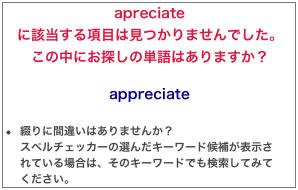

【Memo】スペリングミスの多い単語トップ25
■ 『英辞郎 on the WEB for iPhone』をご利用されるときに、スペリングミスをしてしまうと、検索したいキーワードをうまく検索できないことがあります。そのときにはスペルチェッカーが起動し、本来検索したかったキーワードを含んだいくつかのキーワード候補を提案してくれる場合があります。
たとえば、apreciate
と検索したとします。すると、以下のような画面が、検索結果ページに表示されます。

このとき、appreciate
をクリックすると、正しいスペリングの appreciate
で再検索できます。
このように、スペルチェッカーの助けを借りてきちんと正しいスペリングで検索できた検索キーワードのトップ
25 件を集めたのが、以下のリストです。各単語のスペリングで間違えそうな部分を 赤字 で強調表示してみました。 - appreciate
- accommodate
- accommodation
- available
- dimension
- definitely
- configuration
- confirm
- describe
- appropriate
- description
- assessment
- necessary
- recommend
- occur
- achieve
- relevant
- opportunity
- response
- inconvenience
- coordinate
- further
- apologies
- particular
- receive
ざっと見たところ、いくつかのパターンに分類できそうです。
- 子音の連続：appreciate、accommodate など
- L / R の混同：available、relevant など
- -tion / -sion
などの名詞化の接尾辞の混同：dimension など
- -se / -ce
などで終わる名詞形の混同：response、inconvenience など
- ie / ei の混同：achieve、receive など
- in- / im-
などの否定の意味を表す接頭辞の混同：inconvenience など
ワープロソフトなどスペルチェッカーを搭載したソフトウェアは数多くありますが、そうでないソフトもたくさんあります。
スペリングミスは少ないに越したことはありません。上記のようないくつかのポイントに気をつけて、こうしたパターンがありそうな単語をタイプするときは、気をつけてみてください。